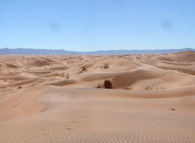

|  |
| 360o panorama picture of the Namib Sand Sea at S: 26o57.10', E: 15o47.90', Z: 882m. The gray specks are dust that got into the camera and eventually destroyed it. Click on the animated gif to download a higher resolution interactive movie (requires Quicktime). |

|
| Visiting Sossusvlei as a tourist in 2003, climbing the dunes for fun |
 |
| I went back to Sossusvlei in 2007 as a geologist, climbing the dunes for samples |